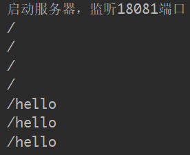
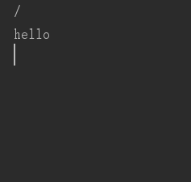

正向代理和反向代理的区别：
正向代理：
客户端知道自己要访问的ip和port，但是没有权限，需要代理去替自己访问
在nginx中设置：
配置resolver 解析请求
配置转发proxy_pass: $host$request_uri
并且还要在客户端进行设置
反向代理：
客户端只知道访问代理，具体去哪里请求是代理的事情，客户端也不需要特殊设置
在nginx中设置：
proxy_pass: http://serverip
负载均衡：
配置upstream server1 { server ... } 然后反向代理的时候 直接指定server1
nginx有自己的策略去做负载均衡
动静分离：
可以对请求进行正则匹配。把静态资源如html, css, js，图片等 不做转发，直接在nginx中获取
动态资源按照上述代理转发。
配置： node服务器 本地18081端口 springboot服务器 本地18082端口 nginx服务器8081 负载均衡 3：1到node和springboot
请求结果 node服务器
请求结果 springboot服务器